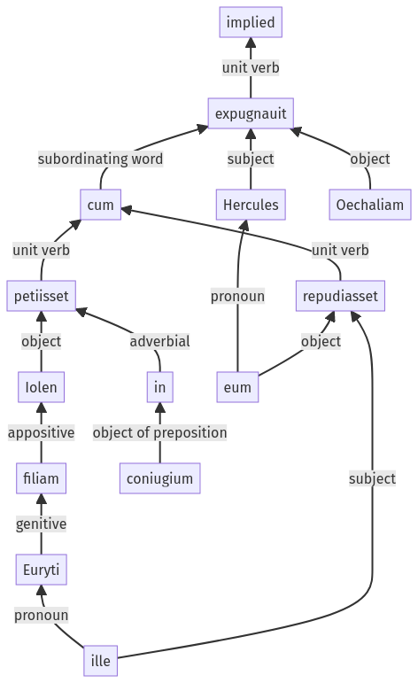

Hyginus, Fabuleer, 35pr.1.1-35pr.1.13a
34pr.2.35-34pr.2.40a | 35pr.1.14-35pr.1.25a
Sentence 472
35pr.1.1-35pr.1.13a
Hercules cum Iolen Euryti filiam in coniugium petiisset, ille eum repudiasset, Oechaliam expugnauit;
2 Hercules cum Iolen Euryti filiam in coniugium petiisset
2 ille eum repudiasset
1 Oechaliam expugnauit
Hercules cum Iolen Euryti filiam in coniugium petiisset, ille eum repudiasset, Oechaliam expugnauit;
Highlighting:
- connecting words
- unit verb
- subject
- object
Color code:
- independent clause (level 1, transitive verb)
- subordinate clause (level 2, transitive verb)
- subordinate clause (level 2, transitive verb)
